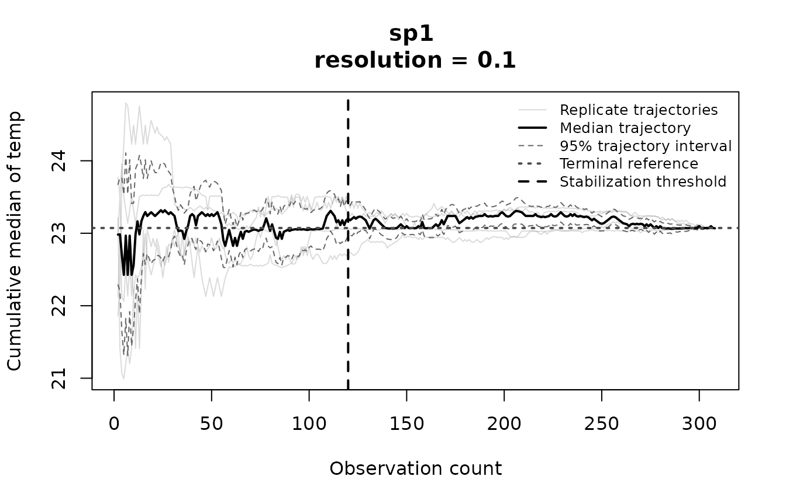
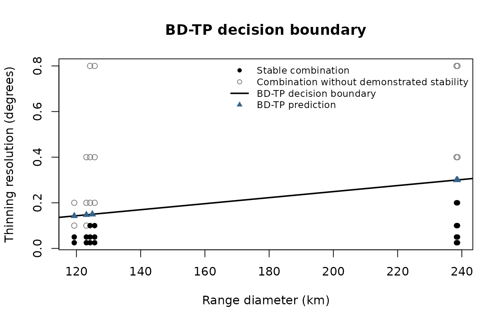
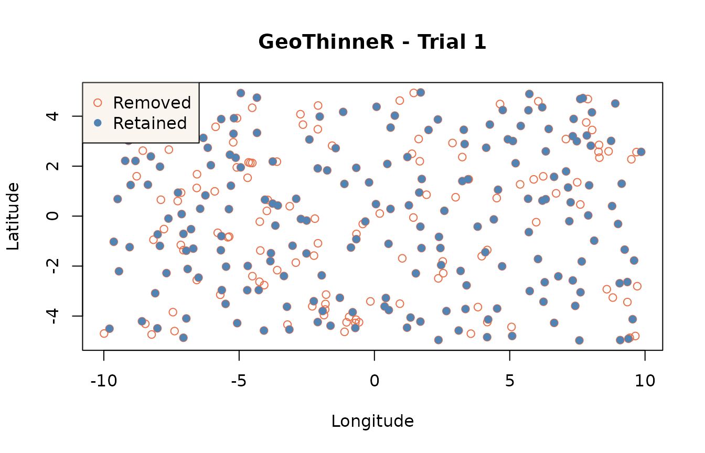

Choosing a thinning resolution
Source:vignettes/estimate_thinning_parameter.Rmd
estimate_thinning_parameter.RmdWhich thinning distance should we use: 0.05°, 1°, or something else?
There is no single answer for every dataset.
estimate_thinning_parameter() helps choose a grid
resolution by checking how the moving median of an environmental
variable stabilizes (or not) as records are progressively sampled
(Ibáñez et al., 2026).
There are two methods. LS-TP selects the largest tested resolution at which the environmental median reaches stability. BD-TP uses the relationship between stability and geographic range size to predict a resolution for each species. Both methods currently work with grid-based thinning, with resolutions expressed in degrees.
Finding a stable resolution
The function needs longitude and latitude in WGS84, a numeric environmental variable, and optionally a column identifying species or other groups. We will simulate records for two species and an environmental variable. These values are only for illustration, they are not measured temperatures.
set.seed(123)
n <- 600
occ <- data.frame(
lon = runif(n, -10, 10),
lat = runif(n, -5, 5),
species = sample(c("sp1", "sp2"), n, replace = TRUE)
)
occ$temp <- 23 - 0.5 * occ$lat + 0.1 * occ$lon + rnorm(n, sd = 0.5)The points cover the same area, while temperature varies mainly with latitude.

Simulated occurrence records and environmental values.
For this example, we use six candidate grid resolutions. By default,
GeoThinneR evaluates 11 resolutions ranging from 0.001º to 17.5º, but
users can provide their own values. group_col tells the
function to estimate a resolution for each species, and
env_col identifies the variable used to assess stability.
We use five sampling replicates to keep this example quick.
resolutions <- c(0.025, 0.05, 0.1, 0.2, 0.4, 0.8)
ls_fit <- estimate_thinning_parameter(
occ,
group_col = "species",
env_col = "temp",
param_method = "ls-tp",
resolutions = resolutions,
replicates = 5,
seed = 123,
keep_curves = TRUE
)
ls_fit$estimated_parameters
#> sp1 sp2
#> 0.8 0.8
ls_fit$estimates[, c("group", "estimated_parameter", "selection_status")]
#> group estimated_parameter selection_status
#> 1 sp1 0.8 stable_parameter_selected
#> 2 sp2 0.8 stable_parameter_selectedestimated_parameters is a named vector, with one
resolution per species. The selection_status column tells
us whether that resolution was found to be stable. If none of the tested
resolutions reaches stability, LS-TP returns 0.001° as a fallback,
not as a confirmed stable resolution.
We can inspect the cumulative median at any tested resolution. The black line is the median across replicates, and the lighter lines show the individual sampling orders. A vertical line marks the start of a stable run when one is found.
plot(ls_fit, group = "sp1", resolution = 0.1)
Cumulative-median stability for sp1 at a 0.1° grid resolution.
For a summary of all tested resolutions, use
summary(ls_fit) or ls_fit$stability. The
latter also distinguishes resolutions that did not reach stability from
those with too few observations to assess it.
Predicting resolutions from range size
BD-TP fits a relationship between geographic range size and the tested thinning resolutions. To illustrate it, we simulate six species with different ranges.
set.seed(42)
species_names <- paste0("sp", 1:6)
spreads <- c(0.30, 0.45, 0.65, 0.95, 1.35, 1.85)
bd_occ <- do.call(rbind, lapply(seq_along(species_names), function(i) {
n <- 80
center_lon <- -140 + 35 * (i - 1)
center_lat <- -25 + 10 * (i - 1)
lon <- center_lon + runif(n, -spreads[i] / 2, spreads[i] / 2)
lat <- center_lat + runif(n, -spreads[i] / 2, spreads[i] / 2)
data.frame(
lon = lon, lat = lat, species = species_names[i],
temp = 16 + i + 0.8 * (lon - center_lon) / spreads[i] + rnorm(n, sd = 1.4)
)
}))The species differ in their occupied areas and environmental values.
Simulated species distributions and environmental values for BD-TP.
if (requireNamespace("e1071", quietly = TRUE)) {
bd_fit <- estimate_thinning_parameter(
bd_occ,
group_col = "species",
env_col = "temp",
param_method = "bd-tp",
resolutions = resolutions,
replicates = 5,
max_samples = 60,
seed = 123
)
bd_fit$estimated_parameters
summary(bd_fit)
}
#> Summary of Thinning Parameter Estimates
#> ---------------------------------------
#> Parameterization method: BD-TP
#> Environmental variable: temp
#> Groups evaluated: 6
#> Resolutions evaluated: 6
#> Groups with stability: 6/6
#> BD-TP rule: resolution = -0.0155311 + 0.00132299 * range diameter (km)
#>
#> SVM training:
#> Stability demonstrated: 18
#> Stability not demonstrated: 15
#> Of which insufficient observations: 12
#>
#> Group Range (km) Resolution (°) Capped Extrapolated
#> sp1 119.32 0.14233 No No
#> sp2 123.09 0.14732 No No
#> sp3 124.96 0.14979 No No
#> sp4 124.96 0.14979 No No
#> sp5 238.34 0.29979 No No
#> sp6 238.64 0.30019 No No
#>
#> BD-TP estimates thinning resolutions from species range size. Unlike LS-TP, the predicted resolutions are not necessarily among those tested.The BD-TP plot shows the combinations used to fit the model, its decision boundary, and the predicted resolutions. Filled points indicate demonstrated stability, open points indicate that stability was not demonstrated.
if (requireNamespace("e1071", quietly = TRUE)) {
plot(bd_fit)
}
BD-TP decision boundary and predicted thinning resolutions.
These two plotting groups are kept simple, but the full diagnostics
are still available in bd_fit$stability. In particular,
combinations with at least three sampled observations enter BD-TP even
when there are too few observations to assess a stable run. They remain
labelled "insufficient_observations" in the diagnostic
table. BD-TP predictions may fall between tested resolutions and should
be interpreted as model predictions, not directly observed
stability.
Thinning the records
Estimating a resolution does not remove any records. Once we have
checked the LS-TP results, we can pass a selected resolution to
thin_points().
stable_species <- ls_fit$estimates$group[ls_fit$estimates$selection_status == "stable_parameter_selected"]
if (length(stable_species) > 0) {
sp <- stable_species[[1]]
thinned <- thin_points(
subset(occ, species == sp),
method = "grid",
resolution = unname(ls_fit$estimated_parameters[[sp]]),
seed = 123
)
summary(thinned)
plot(thinned)
}
#> Note: Nearest neighbor distances and spatial coverage are computed using Haversine geometry by default.
#> Summary of GeoThinneR Results
#> -----------------------------
#> Trial summarized : 1
#> Method used : grid
#> Distance metric : haversine
#>
#> Number of points:
#> Original 310
#> Thinned 195
#> Retention ratio 0.629
#>
#> Nearest Neighbor Distances [km]
#> Min 1st Qu. Median Mean 3rd Qu. Max
#> Original 2.643 25.573 43.689 46.591 61.385 140.416
#> Thinned 11.621 51.957 68.681 69.710 88.273 140.416
#>
#> Spatial Coverage (Convex Hull Area) [km2]
#> Original 2345413.763
#> Thinned 2323958.104
Original and retained records after applying an LS-TP resolution.
These estimates can help choose a thinning resolution, but they do not by themselves demonstrate that sampling bias has been removed. For ecological analyses, use measured environmental variables and inspect the stability results before applying the selected resolution.
Reference
Ibáñez, H., Bidegain, G., Sáez de Ocáriz, H., Mestre-Tomás, J., Verbruggen, H., Jueterbock, A. O., & Becerro, M. A. (2026). Stop guessing thinning distances: a data-driven framework for spatial thinning parametrization for ecological modelling. bioRxiv, 2026-10. https://doi.org/10.64898/2026.10.23.759308
Mestre-Tomás, J. (2026). GeoThinneR: An R Package for Efficient Spatial Thinning of Species Occurrences and Point Data. The R Journal, 18(1), 299-314. https://doi.org/10.32614/RJ-2026-006